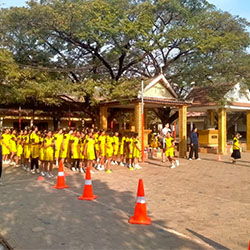
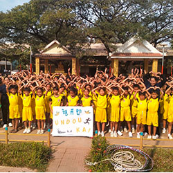
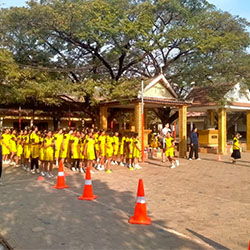
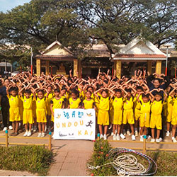
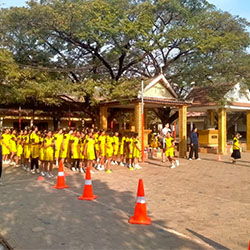
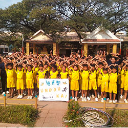

សាលាបឋមសិក្សា ធ្លកអណ្ដូង មិនត្រឹមតែផ្តោតលើការអប់រំក្នុងថ្នាក់ប៉ុណ្ណោះទេ ប៉ុន្តែថែមទាំងផ្តល់សារៈសំខាន់យ៉ាងខ្លាំងដល់សកម្មភាពកីឡា។ កីឡាគឺជាផ្នែកមួយនៃការអប់រំទូទៅ ដែលជួយអភិវឌ្ឍសុខភាពកាយ និងចិត្តរបស់កុមារ។ នៅក្នុងសាលា កីឡាត្រូវបានចាត់ទុកថាជាវិធីសំខាន់ក្នុងការបង្កើតស្មារតីក្រុម ការសហការណ៍ និងការយល់ដឹងអំពីវិន័យ។ សិស្សទាំងអស់ត្រូវបានលើកទឹកចិត្តឱ្យចូលរួមក្នុងសកម្មភាពកីឡាប្រចាំសប្តាហ៍។ កីឡាដែលពេញនិយមមានដូចជា បាល់ទាត់ បាល់ទះ រត់ប្រណាំង និងលំហាត់កាយ។ ការប្រកួតបាល់ទាត់តែងតែទាក់ទាញចំណាប់អារម្មណ៍របស់សិស្សជាច្រើន ព្រោះវាជាកីឡាដែលអាចលេងជាក្រុម និងបង្កើតស្មារតីសហការណ៍។ បាល់ទះក៏ជាកីឡាដែលសិស្សស្រីចូលចិត្តយ៉ាងខ្លាំង ព្រោះវាជួយអភិវឌ្ឍសមត្ថភាពក្នុងការគ្រប់គ្រងកម្លាំង និងការសម្របសម្រួល។ ក្រៅពីកីឡាប្រចាំថ្ងៃ សាលាបឋមសិក្សា ធ្លកអណ្ដូង ក៏រៀបចំ កម្មវិធីប្រកួតកីឡា ជាប្រចាំឆ្នាំ ដើម្បីជំរុញឱ្យសិស្សមានការចូលរួម និងបង្ហាញសមត្ថភាព។ កម្មវិធីទាំងនេះមិនត្រឹមតែជាការប្រកួតប៉ុណ្ណោះទេ ប៉ុន្តែថែមទាំងជាឱកាសសម្រាប់សិស្សក្នុងការបង្កើតមិត្តភាពថ្មី និងការយល់ដឹងអំពីស្មារតីកីឡា។ ការប្រកួតកីឡាដែលមានការចូលរួមពីសិស្សគ្រប់ថ្នាក់ បានបង្ហាញថា កីឡាជួយបង្កើតភាពរីករាយ និងការចូលរួមយ៉ាងសកម្មក្នុងសាលា។ សាលាបឋមសិក្សា ធ្លកអណ្ដូង ក៏បានផ្តោតលើការបង្រៀនសិស្សអំពី សុខភាព និងអនាម័យ តាមរយៈកីឡា។ ការលេងកីឡាបានជួយសិស្សក្នុងការរក្សាសុខភាពកាយ និងការបង្កើតទម្លាប់ល្អក្នុងជីវិតប្រចាំថ្ងៃ។ កុមារដែលចូលរួមក្នុងសកម្មភាពកីឡាបានបង្ហាញថា ពួកគេមានភាពរីករាយក្នុងការសិក្សា និងមានសមត្ថភាពក្នុងការប្រឈមមុខនឹងបញ្ហាប្រចាំថ្ងៃ ក្រៅពីនេះ កីឡាក៏ជួយបង្កើត ភាពជាអ្នកដឹកនាំ និង ការទទួលខុសត្រូវ។ នៅពេលសិស្សចូលរួមក្នុងក្រុមកីឡា ពួកគេត្រូវរៀនអំពីការគោរពច្បាប់ ការសហការណ៍ និងការទទួលខុសត្រូវចំពោះក្រុម។ វាជួយបង្កើតសមត្ថភាពដឹកនាំ និងការយល់ដឹងអំពីតម្លៃសង្គម។ សាលាបឋមសិក្សា ធ្លកអណ្ដូង មានគោលបំណងបន្តអភិវឌ្ឍសកម្មភាពកីឡា ដោយបង្កើតឱកាសថ្មីៗសម្រាប់សិស្ស។ ការបង្កើតទីលានកីឡា និងឧបករណ៍កីឡាថ្មីៗ គឺជាផ្នែកមួយនៃការខិតខំប្រឹងប្រែងរបស់សាលា ដើម្បីធានាថាសិស្សទទួលបានការអប់រំទាំងផ្នែកវិជ្ជា និងផ្នែកកាយ។ ជាសរុប កីឡាគឺជាផ្នែកសំខាន់នៃជីវិតសិស្សនៅសាលាបឋមសិក្សា ធ្លកអណ្ដូង។ វាមិនត្រឹមតែជួយអភិវឌ្ឍសុខភាពកាយនិងចិត្តទេ ប៉ុន្តែថែមទាំងជួយបង្កើតស្មារតីក្រុម ការសហការណ៍ និងភាពជាអ្នកដឹកនាំ។ កីឡាបានធ្វើឱ្យសាលាមានភាពរស់រវើក និងបង្កើតបរិយាកាសសិក្សាដែលពោរពេញដោយក្តីស្រឡាញ់ និងការចូលរួម។


ការត្រួតពិនិត្យភ្នែក(Eye Checking) គឺជាដំណើរការដ៏សំខាន់ក្នុងការថែរក្សាសុខភាពទូទៅ និងការពារភ្នែកពីជំងឺឬបញ្ហាដែលអាចកើតមាន។ ភ្នែកគឺជាអង្គធាតុសំខាន់បំផុតមួយក្នុងរាងកាយ ដែលជួយឱ្យយើងអាចមើលឃើញពិភពលោក និងធ្វើសកម្មភាពប្រចាំថ្ងៃបានយ៉ាងមានប្រសិទ្ធភាព។ ដូច្នេះ ការត្រួតពិនិត្យភ្នែកជាប្រចាំគឺជាការពិតជាចាំបាច់។ ការត្រួតពិនិត្យភ្នែកជាធម្មតា ត្រូវបានអនុវត្តដោយវេជ្ជបណ្ឌិតភ្នែក ឬអ្នកជំនាញផ្នែកភ្នែក។ ក្នុងដំណើរការត្រួតពិនិត្យនេះ គេនឹងពិនិត្យស្ថានភាពទូទៅនៃភ្នែក ដូចជា កម្លាំងចក្ខុវិស័យ, សម្ពាធភ្នែក, សភាពកញ្ចក់ភ្នែក និងក្រពេញភ្នែក។ ការត្រួតពិនិត្យទាំងនេះអាចជួយរកឃើញបញ្ហាដូចជា ភ្នែកខ្សោយ, ការមិនអាចមើលឃើញពណ៌បានត្រឹមត្រូវ, ជំងឺក្រពេញភ្នែក, ជំងឺកញ្ចក់ភ្នែក និងជំងឺភ្នែកផ្សេងៗទៀត។